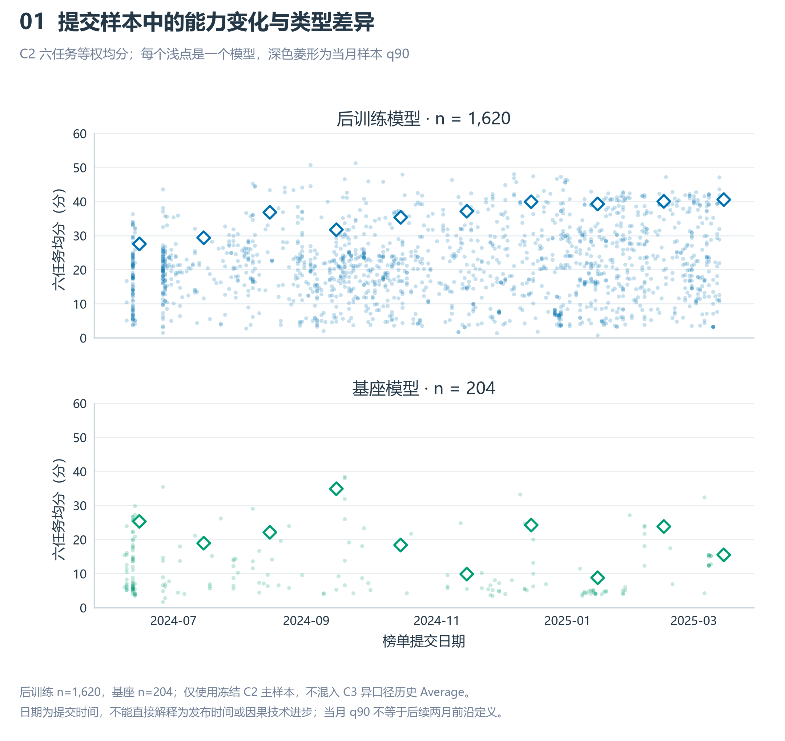
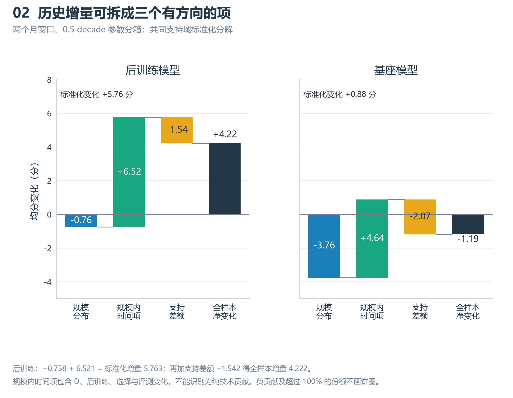
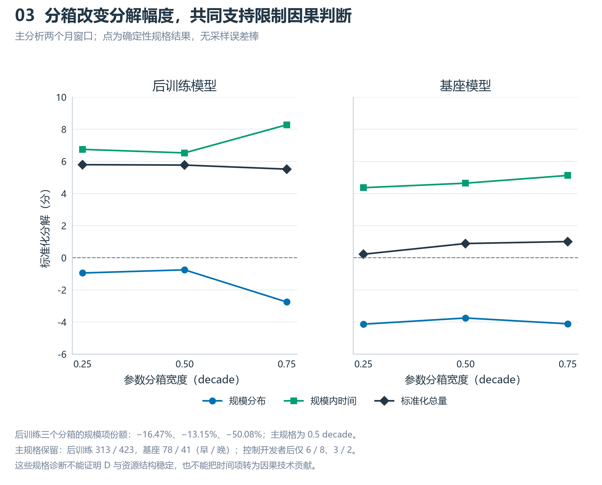
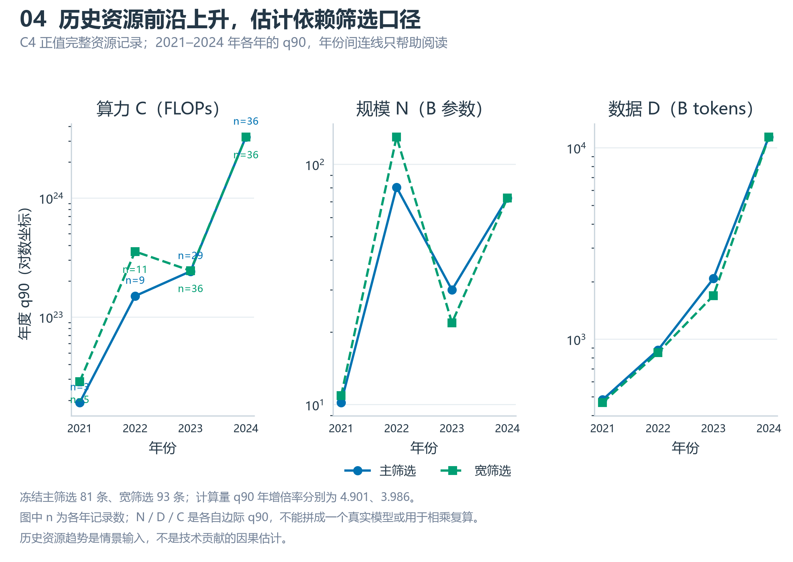
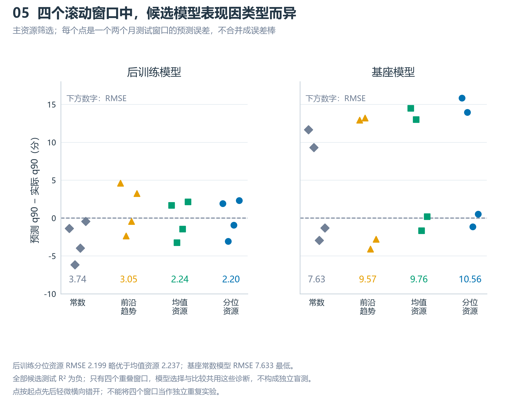
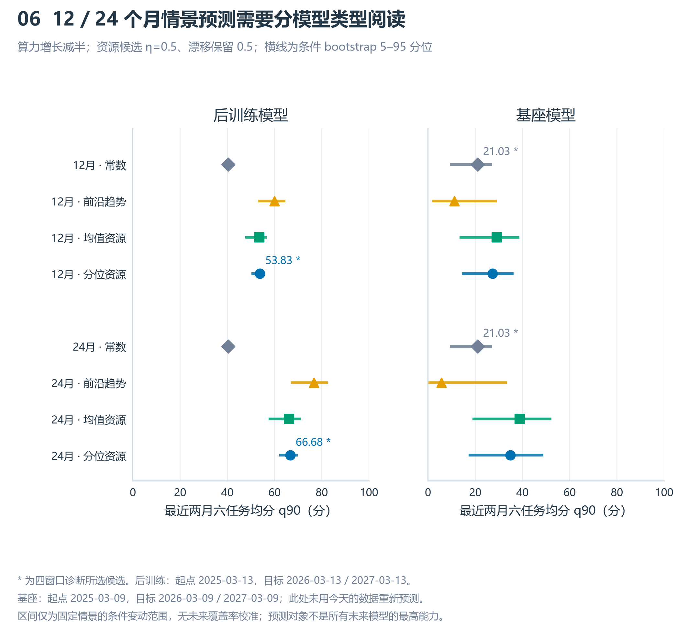
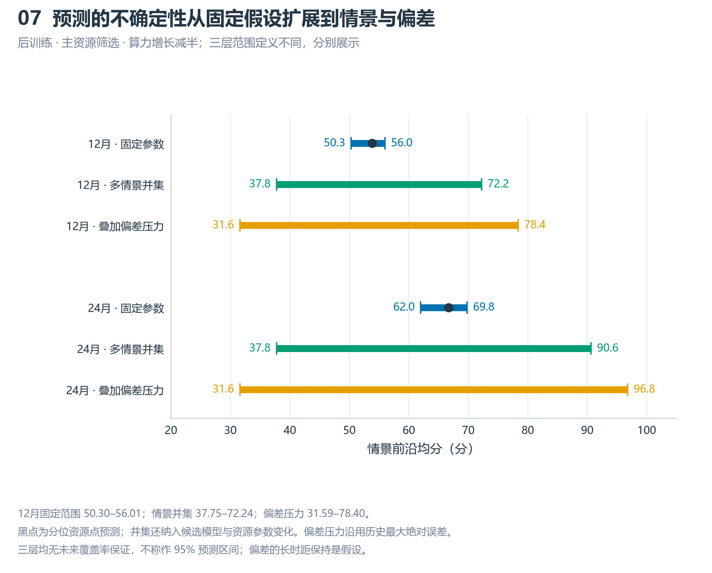
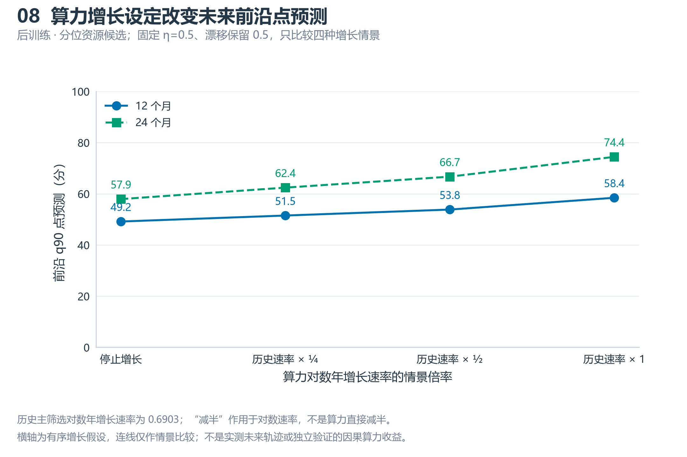
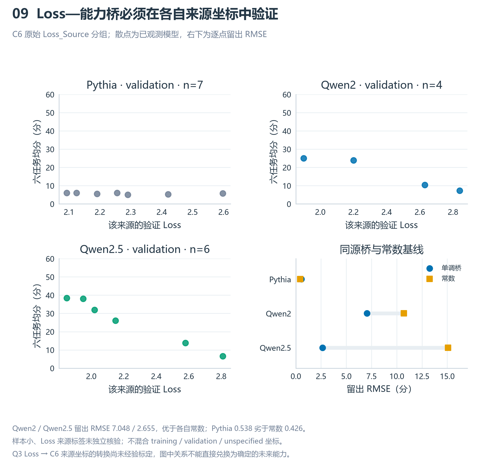
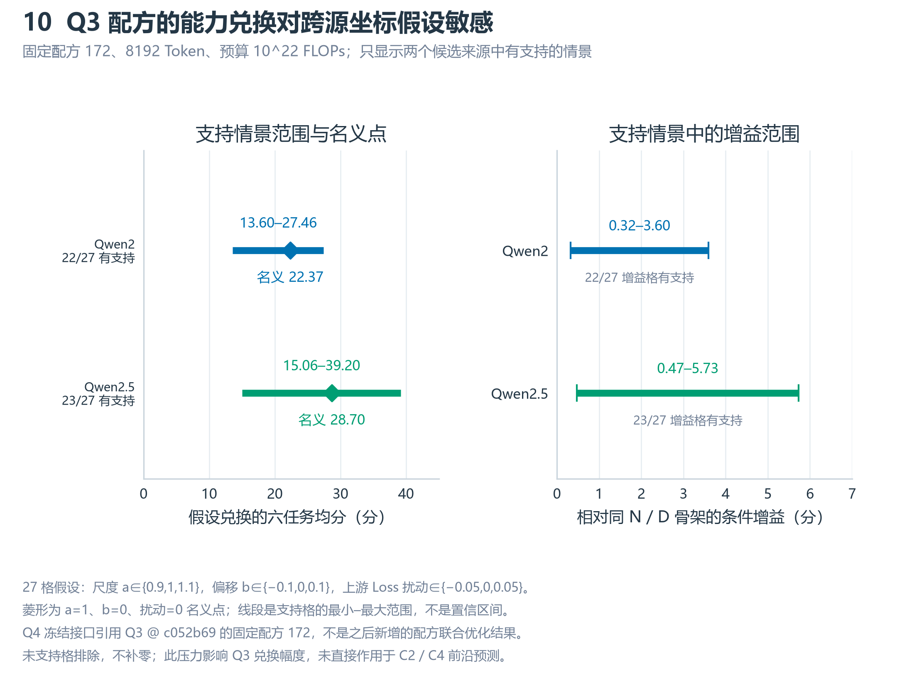

Q4 结果图册
main @ b789e3f 的冻结 Q4 v3 结果。历史分解是条件关联；未来预测起点为 2025 年 3 月。与 Q1–Q3 同一分支、版式和配色。

后训练 n=1,620，基座 n=204；仅使用冻结 C2 主样本，不混入 C3 异口径历史 Average。
日期为提交时间，不能直接解释为发布时间或因果技术进步；当月 q90 不等于后续两月前沿定义。
PDF · SVG
后训练：−0.758 + 6.521 = 标准化增量 5.763；再加支持差额 −1.542 得全样本增量 4.222。
规模内时间项包含 D、后训练、选择与评测变化，不能识别为纯技术贡献。负贡献及超过 100% 的份额不画饼图。
PDF · SVG
后训练三个分箱的规模项份额：−16.47%、−13.15%、−50.08%；主规格为 0.5 decade。
主规格保留：后训练 313 / 423，基座 78 / 41（早 / 晚）；控制开发者后仅 6 / 8、3 / 2。
这些规格诊断不能证明 D 与资源结构稳定，也不能把时间项转为因果技术贡献。
PDF · SVG
冻结主筛选 81 条、宽筛选 93 条；计算量 q90 年增倍率分别为 4.901、3.986。
图中 n 为各年记录数；N / D / C 是各自边际 q90，不能拼成一个真实模型或用于相乘复算。
历史资源趋势是情景输入，不是技术贡献的因果估计。
PDF · SVG
后训练分位资源 RMSE 2.199 略优于均值资源 2.237；基座常数模型 RMSE 7.633 最低。
全部候选测试 R² 为负；只有四个重叠窗口，模型选择与比较共用这些诊断，不构成独立盲测。
点按起点先后轻微横向错开；不能将四个窗口当作独立重复实验。
PDF · SVG
* 为四窗口诊断所选候选。后训练：起点 2025-03-13，目标 2026-03-13 / 2027-03-13。
基座：起点 2025-03-09，目标 2026-03-09 / 2027-03-09；此处未用今天的数据重新预测。
区间仅为固定情景的条件变动范围，无未来覆盖率校准；预测对象不是所有未来模型的最高能力。
PDF · SVG
12月固定范围 50.30–56.01；情景并集 37.75–72.24；偏差压力 31.59–78.40。
黑点为分位资源点预测；并集还纳入候选模型与资源参数变化。偏差压力沿用历史最大绝对误差。
三层均无未来覆盖率保证，不称作 95% 预测区间；偏差的长时距保持是假设。
PDF · SVG
历史主筛选对数年增长速率为 0.6903；“减半”作用于对数速率，不是算力直接减半。
横轴为有序增长假设，连线仅作情景比较；不是实测未来轨迹或独立验证的因果算力收益。
PDF · SVG
Qwen2 / Qwen2.5 留出 RMSE 7.048 / 2.655，优于各自常数；Pythia 0.538 劣于常数 0.426。
样本小、Loss 来源标签未独立核验；不混合 training / validation / unspecified 坐标。
Q3 Loss → C6 来源坐标的转换尚未经验标定，图中关系不能直接兑换为确定的未来能力。
PDF · SVG
27 格假设：尺度 a∈{0.9,1,1.1}，偏移 b∈{−0.1,0,0.1}，上游 Loss 扰动∈{−0.05,0,0.05}。
菱形为 a=1、b=0、扰动=0 名义点；线段是支持格的最小–最大范围，不是置信区间。
Q4 冻结接口引用 Q3 @ c052b69 的固定配方 172，不是之后新增的配方联合优化结果。
未支持格排除，不补零；此压力影响 Q3 兑换幅度，未直接作用于 C2 / C4 前沿预测。
PDF · SVG